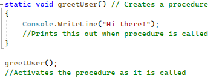
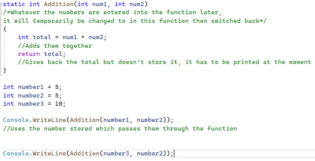

The final chapter of our booklet covers functions, something every programmer must use. Functions work by writing one piece of code once and storing it under a name. When this name is called it means that the piece of code will be activated. This is essential for programmers as it means that code does not need to be repeated, all you will need to do is call that name from the program.
Let's have a look at the basic pseudocode of how it works. Pseudocode means writing code that is not interpretable to computers but we can understand how it works as humans in a code style. Firstly, we would have to give a name to this function (in this example I will use a function that greets the user) which I will call greetUser. We would then place within the brackets of what we want to print from this function. Now that you have the basic idea of how it works I will put it into code.
function. A procedure just executes commands and does not return a value, whereas a function returns a value. In my first example, I will use a procedure. To declare a procedure, we need to write static void which shows to the program we will not return a value. Then we need to name our function which I will call greetUser and we add brackets after () to show that it is a function. Next, we will write two curly brackets {}, and then inside this, we will write our code which does not return a value. Within it I want to print out "Hi there!" so I will use Console.Writeline(). Now if you were to run this program you would notice that it would print nothing. This is because we have only declared the variable and we have not instructed the computer to do the function. This can be done by printing the function name with the brackets which in our case is greetUser(); Let me now show you how this works:

Now let's do a function that returns a value. Firstly, if we are returning a value this means that we want to input a value that will be affected by the function. This means that instead of writing void, we write the data type of the value we want to return. For example, if we want to return an integer we would use static int. Next, we need to name our variable (in this example I want to make an addition calculator) so I will call it Addition. Next, I need to write the name of variables that I will use in the function which I will declare as int num1 and int num2 which will be separated by a comma. These two variables cannot be equal to variables we declared earlier in the program, they must be original and only used in that function. Next, we place our code within the function within curly brackets {}. As it is an addition calculator I will do total = num1 + num2; (using the variables we have declared) and on the next line I will return total; which will return the total as an integer as we have instructed earlier. Now that we have our function we need to declare it. Firstly, we need to declare two new variables which I will call number1 and number2 which I will make both equal to 5. Then I will place these two variables within the function separating them with a comma. However, this will not print the total it will only store it as a variable so, we will have to instruct the computer to print out the total by placing the function within a Console.Writline(). Although it doesn't matter for this function, be careful of the order of the variables as you may get a different output from what you expected. Now you may be able to see why we don't use variables already declared in our program in the function, it's because we can now use different variables every time for the function and it means we won't have the same output every time. Let's see how this works:

User Challenge: Create a Basic Calculator using functions. If you get stuck look here for inspiration.